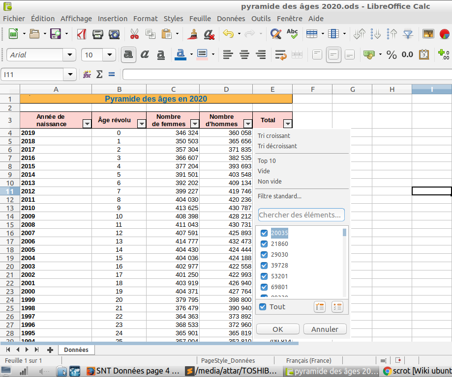
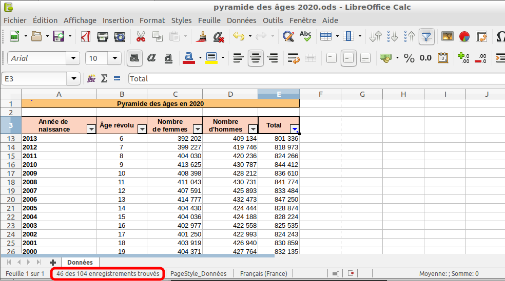
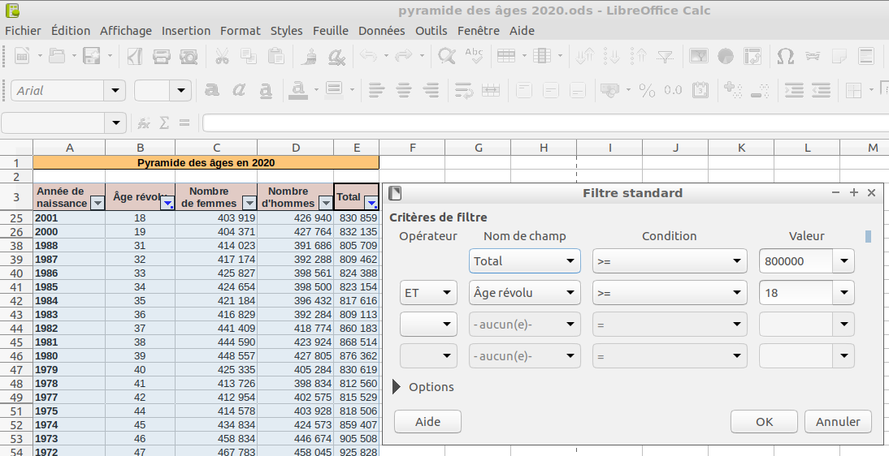

Filtrage des données
Définition (filtrage) :
Filtrer des données, c'est restreindre ces données, pour n’afficher que celles qui répondent à un ou plusieurs critères.
Filtrage avec un AutoFiltre
L’utilisation d’un AutoFiltre est une des façons les plus simples de filtrer les données.
Protocole :
Pour filtrer des données avec le tableur Calc à l'aide d'un AutoFiltre,
il faut suivre le protocole suivant :
-
ouvrir un fichier de données au format ods (extension .ods) ;
-
sélectionner la ligne des descripteurs en cliquant
sur le numéro de la ligne en question ;
-
cliquer ensuite sur l'onglet Données puis choisir Autofiltre
ce qui fait apparaître des fléches pour chacun des descripteurs ;
-
il faut ensuite cliquer sur l'une des flèches de l'un des descripteurs et le menu suivant apparaît :

Description du menu de l'AutoFiltre
-
les deux premières lignes Tri croissant et Tri décroissant permettent
de trier les données en les ordonnant dans l'ordre croissant ou décroissant des valeurs
du descripteur sélectionné ;
-
la troisième ligne Top 10 permet de conserver uniquement les 10 lignes du fichier de données
correspondant au dix plus grandes valeur du
descripteur sélectionné ;
-
la quatrième ligne Vide permet de conserver uniquement les lignes du fichier de données
dont les cellules correspondant au
descripteur sélectionné sont vides ;
-
la cinquième ligne Non vide permet de conserver uniquement les lignes du fichier de données
dont les cellules correspondant au
descripteur sélectionné ne sont pas vides ;
-
la sixième ligne Filtre standard... permet de définir des conditions sur un ou plusieurs champs (c'est à dire descripteurs) pour filtrer les données ;
-
la dernière partie du menu permet de sélectionner toutes les données ou une partie des données.
Dénombrer le nombre d'objets trouvés après un filtre
-
Faire un filtre dans LibreOffice Calc.
-
Cliquer ensuite sur une cellule quelconque pour désélectionner le tableau de données.
-
Le nombre d'objets trouvés apparaît alors dans une case en bas à gauche.

Appliquer plusieurs filtres
-
Sélectionner dans LibreOffice Calc, l'onglet Données, puis AutoFiltre, puis
Filtre standard....
-
Choisir un premier filtre.
-
Ajouter ensuite d'autres filtres sur les lignes suivantes du Filtre standard... à l'aide de
l'opérateur ET le plus souvent ou de l'opérateur OU.
-
Pour suprimer un filtre, il faut dans la fenêtre du Filtre standard cliquer sur le
premier Nom de champ et choisir -aucun(e)-.

Quiz 4